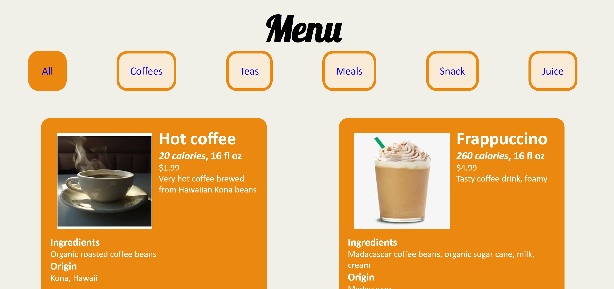

Week 13
This week, we continued to work on the coffee project website. It was alot of fun building out the create-read-update-delete system of pages for the products and categories. It was a multi-step process because the fields in the database needed to be expanded. This week, I added additional fields to the database to accomodate data that would be user-centric and would be information that the user would be interested in learning about. For example, the product image, product origin, ingredients, calories, and serving size were added to the database. The product image was a VARCHAR that was the address of the image PNG or JPEG, while the product origin, ingredients, and serving size were VARCHAR to describe where the product originated geographically, the ingredients used to create the product, and the size of the product. Meanwhile, the calories was a numeric value.
After upgrading the database fields, I worked on implementing all those new fields into the create-read-update-delete pages. This started with the Add Products page, where the enctype attribute for the form has the value multipart/form-data. This is necessary for the form to be able to upload files. Also of note was that there is a hidden input field for MAX_FILE_SIZE. The file upload processing would result in a $_FILES['upload']['error'] code. A code of 0 means the file was successfully uploaded, while a code of values 1-4 and 6-8 would mean an error occurred. It was very convenient to use a switch statement to do selective processing of these error codes. For example, for error code 4 where no file was uploaded, I simply had the program break because I would simply set a default image for the file. Meanwhile, for error code 2 where the file uploaded exceeds the MAX_FILE_SIZE, I would simply echo to the user that the file size was too large. Since the switch statements in PHP fall through, it is possible to have multiple cases do the same action if you omit the break statement.
After modifying the query in the Add Products page with the newly added fields, I checked in the database to make sure all the fields were correctly adding to the table. The one field that had problems at first was the image field. At first, the image location string did not add correctly. After concatenating the file path, the image was then able to display properly on the View Products page.
This week I also focused on completely rewriting the Edit Products page. The Edit Products page now has a link for each product that directs you to a page called Edit Single Product that lets you edit all the fields of the products except for changing the product id, product category, or its image. I think the product id should never change, while it should be ok to implement changing of the product category and image in the future. To edit products, the user needs to click on the name of the product to edit. Then, on the Edit Single Product page, the user edits to the input fields that have been populated with the current database data for that product. Upon clicking Save, a query is made to update the data on the database with the newly updated data.
By completely rewriting the Edit Products page, it now instead shows a table of products that are sortable by different table headers such as product name, product id, category, or price. The sorting is done through PHP by changing the sort by value in the database query. A small thumbnail picture of the product is also shown on the Edit Products page.
The View Products page was also modified this week to improve the user experience. An image is displayed of each product to the user in addition to relevant information about each product.  This data includes the price, origin, serving size, calories, and description of the product. I also wanted to make the page more visually appealing so I added a cursive font from Google Fonts called Lobster for the H1 heading "Menu" and also used a flexbox to space evenly the filter buttons across the top of the page. I added a transition for the background color for the buttons when a different button is clicked, and for the other buttons that are not clicked to return to the original background color. There is definitely still areas to improve on the layout and styling of the View Products page.
This week I also added the create-read-update-delete pages for the categories. This included the Add Category page, the View Category page, and the Edit Category Page. These pages were considerably simpler than the product pages, because the category table only had fields for id, name, image, and status. The admin user is able to add new categories and optionally add a unique picture for the category. The user is able to choose whether the category is active or inactive.
The View Category page then presents a table that lists all the current categories. Since there are only a handful of categories (6 at the moment), it was not necessary to implement a number of different pages. However the categories can be sorted by id, name, and status. There is also an image showing the representation of the category. If the image was not uploaded, a default coffee bean image is shown.
Lastly, the Edit Category page allows the user to edit the category selected. The Edit Category page will actually look different depending on how the user navigated to the site. If the user navigated to the site from the View Categories page after having clicked on a link to edit a specific item, the website will load with a $_GET variable id with the value of the product id. When the Edit Category page has a $_GET variable id, then it will simply display the editable information for that product id. On the other hand, if the the user went to the Edit Category page by clicking on the link in the header, the page would show a drop down select menu with all the categories and allow the user to select the category they would like to edit.
Supplemental Learning
This week, I was trying to research how to style content where when the user scrolls down the page, the content changes opacity from 0 to 1 and transforms upward. I was not able to figure out definitively how to do this but it seems to involve JavaScript and trying to determine the window position and the div top and bottom location. So while that attempt to learn that content did not completely work out, I did end up learning about transforms.
Transforms are a really amazing property that move the location of an object. For example, when you hover over a button, you can set its transform to translateY(1em), which causes the button to move down 1em. Then, on the CSS of the original item, you set a transition with the value of transform, 500ms, which causes the transform to complete over half a second. Here is an example which works when you hover over the button.